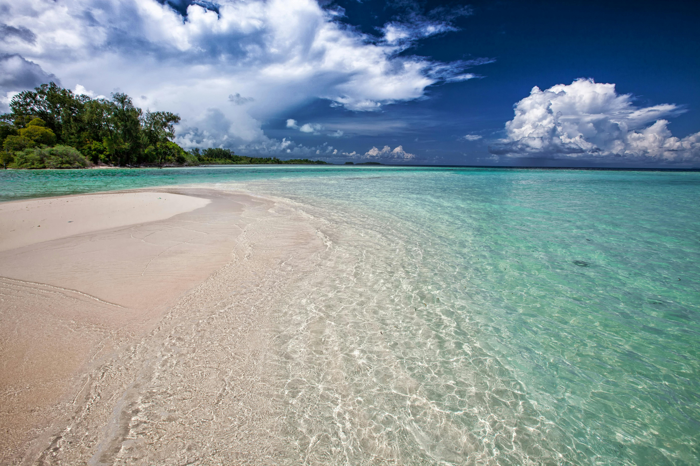

Attractions and Activities
Taniti offers a mix of natural beauty, cultural experiences, and entertainment for all kinds of travelers. Most visitors spend time in Taniti City and around Yellow Leaf Bay, but attractions can be found across the island.

Beaches and Sightseeing
Relax on white sandy beaches, explore Taniti City’s native architecture, or take a boat or bus tour around the island.
Rainforest and Volcano
Hike through lush rainforest trails, go zip-lining, or visit Taniti’s small active volcano in the island’s mountainous interior.
Entertainment
Enjoy chartered fishing tours, snorkeling, helicopter rides, an arcade, movie theater, bowling, art galleries, pubs, and a dance club.
Merriton Landing
Many activities are located in Merriton Landing, a rapidly developing area on the north side of Yellow Leaf Bay. It is a popular area for tourists who want dining, entertainment, and walkable access to attractions.
Back to Home